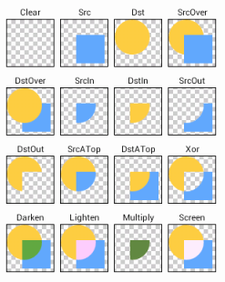

Android Graphics 之 Paint类方法详解
2014-02-11 23:39:00 by suphyAndroid Graphics 之 Paint类方法详解
资源文件string标签属性translatable
<string name="app_filter_class" translatable="false">xxx</string>
属性translatable="false" 表示不希望该字符串随着语言环境的变化而变化。
设置画笔Paint的setMaskFilter
MaskFilter类可以为paint分配边缘效果。对MaskFilter的扩展可以对一个Paint边缘alpha通道应用转换。
BlurMaskFilter 指定一个模糊的样式和半径来处理Paint的边缘。 EmBossMaskFilter 指定了光源的方向和环境光强度来添加浮雕效果。
sBlurPaint.setMaskFilter(new BlurMaskFilter(5 * density, BlurMaskFilter.Blur.NORMAL));
注：MaskFilter是对Paint的alpha通道的转换，而ColorFilter是对每个GRB通道应用转换，所有由ColorFilter所派生的类在执行它们的转换时，都会忽略alpha通道。
设置Paint的setColorFilter()
ColorMatrix cm = new ColorMatrix();
//改变饱和度，传入一个大于 1 的数字将增加饱和度,而传入一个 0~1 之间的数字会减少饱和度。0 值将产生一幅灰度图像
cm.setSaturation(.5f);
paint.setColorFilter(new ColorMatrixColorFilter(cm));
设置Paint的setPathEffect()
PathEffect是用来控制绘制轮廓的方式。PathEffect对于绘制Path基本图形特别有用，但是它们也可以应用到任何Paint中从而影响线条绘制的方式。使用PathEffect，可以改变一个形状的边角的外观并且控制轮廓的外表。Android包含了多个PathEffect，包括：
- CornerPathEffect 可以使用圆角来代替尖锐的角从而对基本图形的形状尖锐的边角进行平滑。
- DashPathEffect 可以使用DashPathEffect来创建一个虚线的轮廓(短横线/小圆点)，而不是使用实线。你还可以指定任意的虚/实线段的重复模式
- DiscretePathEffect 与DashPathEffect相似，但是添加了随机性。当绘制它的时候，需要指定每一段的长度和与原始路径的偏离度
- PathDashPathEffect 这种效果可以定义一个新的形状(路径)并将其用作原始路径的轮廓标记。
下面两张效果可以在一个Paint中组合使用多个PathEffect:
- SumPathEffect 顺序地在一条路径中添加两种效果，这样每一种效果都可以应用到原始路径中，而且两种结果可以结合起来。
- ComposePathEffect 将两种效果组合起来应用，先使用第一种效果，然后在这种效果的基础上应用第二种效果
设置Paint的setXfermode() 用于图像的合成
合成是将两幅图像放在一起的动作,它使得我们能够同时看到两幅图像的特征。
在 Android SDK 中,可以通过首先在 Canvas 对象绘制一个位图对象,然后在相同的 Canvas 对象上绘制第二个位图对象的方式来实现合成。唯一的区别是在绘制第二幅图像 时,需要在 Paint 对象上指定一个过渡模式(Xfermode)。
设置图像叠加时的处理方式，如合并，取交集，经常用来制作皮擦得擦除效果。
橡皮擦，这是个好方法啊，看看。
可以通过修改Paint的Xfermode来影响在Canvas已有的图像上面绘制新的图像的方式。可用作过渡模式的类集合都继承自 Xfermode 基类,而且其中包括一个称为 PorterDuff- Xfermode 的类。
在正常的情况下，在已有的图像上绘图将会在其上面添加一层新的形状。如果新的Paint是完全不透明的，那么它将完全遮挡住下面的Paint；如果它是部分透明的，那么它将会被染上下面的颜色。下面的Xfermode子类可以改变这种行为：
- AvoidXfermode 指定了一个颜色和容差，强制Paint避免在它上面绘图(或者只在它上面绘图)
- PixelXorXfermode 当覆盖已有的颜色时，应用一个简单的像素XOR操作
- PorterDuffXfermode 这是一个非常强大的转换模式，使用它，可以使用图像合成的16条Porter-Duff规则的任意一条来控制Paint如何与已有的Canvas图像进行交互
要应用转换模式，可以使用setXferMode方法，如下所示：
AvoidXfermode avoid = new AvoidXfermode(Color.BLUE, 10, AvoidXfermode.Mode. AVOID);
paint.setXfermode(avoid);
这里可以实现完美的橡皮擦功能！代码异常简单：
Xfermode xFermode = new PorterDuffXfermode(PorterDuff.Mode.CLEAR);
paint.setXfermode(xFermode);
在 Android 的 PorterDuff.Mode 类中列举了图像的重叠绘制模式

这些规则包括如下：
- PorterDuff.Mode.SRC : 此规则意味着只绘制源图像,在当前情况 下,它是正在应用此规则的 Paint 对象;
- PorterDuff.Mode.DST:此规则意味着只显示目标图像,即已在画 布上的初始图像;
- PorterDuff.Mode.DST_OVER:将在源图像的顶部绘制目标图像;
- PorterDuff.Mode.DST_IN:将仅仅在源图像和目标图像相交的地方 绘制目标图像。
- PorterDuff.Mode.DST_OUT:将仅仅在源图像和目标图像不相交的 地方绘制目标图像。
- PorterDuff.Mode.DST_ATOP:将在目标图像与源图像相交的地方 绘制目标图像;在其他地方绘制源图像。
- PorterDuff.Mode.SRC_OVER:将在目标图像的顶部绘制源图像。
- PorterDuff.Mode.SRC_IN:将仅仅在目标图像和源图像相交的地方 绘制源图像。
- PorterDuff.Mode.SRC_OUT:将仅仅在目标图像和源图像不相交的 地方绘制源图像。
- PorterDuff.Mode.SRC_ATOP:将在源图像与目标图像相交的地方 绘制源图像;在其他地方绘制目标图像
- PorterDuff.Mode.XOR:将在源图像和目标图像重叠之外的任何地 方绘制它们,而在它们重叠的地方不绘制任何内容。
- PorterDuff.Mode.LIGHTEN:获得每个位置上两幅图像中最亮的像 素并显示。
- PorterDuff.Mode.DARKEN:获得每个位置上两幅图像中最暗的像 素并显示。
- PorterDuff.Mode.MULTIPLY:将每个位置的两个像素相乘,除以 255,然后使用该值创建一个新的像素进行显示。结果颜色=顶部颜色×底部颜色 /255。
- PorterDuff.Mode.SCREEN:反转每个颜色,执行相同的操作(将它 们相乘并除以 255),然后再次反转。结果颜色=255−(((255−顶部颜色)×(255−底部 颜色))/255)
Matrix类
当在现有位图对象上进行绘制或从一个位图对象创建另外一个位图对象时，可以使用Matrix类。这个类使得我们能够在一副图像上应用空间转换。这中类型的转换可以是旋转、剪切、缩放或更改图像的坐标空间。
Matrix类以9个数字的数组表示。Matrix类中每个数字都将应用于图像上每个点的3个坐标（x,y,z）之一。
例如，下面是一个包含9个浮点数的矩阵：
1 0 0
0 1 0
0 0 1
第一行(1 0 0) 指定图像的x坐标: x = 1x + 0y + 0z.
第二行(0 1 0) 指定图像的y坐标: y = 0x + 1y + 0z.
第三环(0 0 1) 指定图像的z坐标: z = 0x + 0y + 1z.
即转换后的图像坐标为:
(x, y, z) = (1x + 0y + 0z, 0x + 1y + 0z, 0x + 0y + 1z)
这样变换处理后矩阵不会做任何转换，所有内容都会按照它在源图像中的位置一样。
用代码表示：
Matrix matrix = new Matrix();
matrix.setValues(new float[]{
1, 0, 0,
0, 1, 0,
0, 0, 1
});
canvas.drawBitmap(bmp, matrix, paint);
Matrix类方法
Matrix类帮助我们完成了大部分想要完成的工作，在实际开发中我们大多数时间会使用Matrix的方法。
-
旋转 Matrix.setRotate(float)
它接收一个浮点数表示旋转的角度，默认围绕点(0,0),正数将顺时针旋转图像，而负数将逆时针旋转，默认旋转点是图像的左上角。
Matrix matrix = new Matrix(); matrix.setRotate(15); canvas.drawBitmap(bmp, matrix, paint);另外，也可以使用旋转角度及围绕的旋转点作为参数调用setRotate().如：
matrix.setRotate(15,bmp.getWidth()/2,bmp.getHeight()/2); -
缩放 Matrix.setScale(float,float)
接收两个浮点数参数，分别表示在x,y轴上所产生的缩放量；
matrix.setScale(1.5f,1); -
平移 Matrix.setTranslate(float,float)
两个float参数表示分别在x,y轴上移动的数量。
在 x 轴上使用正数进行平移将向右移动图像,而使用负数将向左移动图像。在 y 轴上使用正数 进行平移将向下移动图像,而使用负数将向上移动图像。
setTranslate(1.5f,-10); -
preXXX 和 postXXX
以上几个方法也都有之前和之后的版本，这使得我们能够每次按顺序完成一个以上的转换。
-
镜像
一个特别有用的方法对是 setScale 和 postTranslate,它们允许跨单个轴(或者两个轴)翻 转图像。如果以一个负数缩放,那么会将该图像绘制到坐标系统的负值空间。由于(0,0)点 位于左上角,使用 x 轴上的负数会导致向左绘制图像。因此我们需要使用 postTranslate 方 法,将图像向右移动
matrix.setScale(-1, 1); matrix.postTranslate(bmp.getWidth(),0); -
翻转
可以在 y 轴上做同样的事情,翻转图像以使其倒置。通过将图像围绕两个轴上的中心 点旋转 180°,可以实现相同的效果.
matrix.setScale(1, -1); matrix.postTranslate(0, bmp.getHeight()); -
绘制替代图像
在之前使用的方法存在一缺点是图像会被截断，因为没有计算转换后的结果大小。
解决方法：当初次创建位图对象时，应用Matrix对象而不是绘制到一个空的位图对象中。通过这种方式将无须获得Canvas和Paint对象。缺点是不能继续更改位图对象，因为如果想要对其进行任何转换，那么需要重新创建它。
可以使用
Bitmap.createBitmap(Bitmap source, int x, int y, int width, int height, Matrix matrix, boolean filter)方法.参数说明：
- Bitmap source : 源位图对象
- int x, int y, int width, int height : 分别是源图像的初始x,y,宽度,高度
- Matrix matrix
- boolean filter : 表示是否在图像上应用某种过滤器
图像处理
另外一种图像编辑或处理的形式是必须处理像素自身颜色值的变化。这将使得我们能够改变对比度，亮度，整体色调等。
ColorMatrix
类似于在Canvas对象上绘制时使用Matrix对象的方法，也可以使用一个ColorMatrix对象来改变用于在Canvas对象上绘制的Paint对象。
ColorMatrix是一个数字数组，可以对图像的像素进行操作。然而不同于操作x,y,z坐标，他操作颜色值--每个像素的R(红)、R(绿)、B(蓝)和Alpha值。
如下使用：
ColorMatrix cm = new ColorMatrix();
//改变饱和度，传入一个大于 1 的数字将增加饱和度,而传入一个 0~1 之间的数字会减少饱和度。0 值将产生一幅灰度图像
cm.setSaturation(.5f);
paint.setColorFilter(new ColorMatrixColorFilter(cm));
默认的 ColorMatrix 对象就是所谓的标识,就像默认的 Matrix 对象一样,当应用它时 不会改变图像。查看以下这个数组所包含的内容将帮助我们理解它如何工作。
1 0 0 0 0
0 1 0 0 0
0 0 1 0 0
0 0 0 1 0
第一行包含了在单个像素的红色部分上发生的操作 第二行影响绿色部分，第三行操作蓝色部分，最后一行操作像素的Alpha值。
而在每一行中，一个数字是与像素的红色值相关联的乘数,第二个数字是与绿色值相 关联的乘数,第三个数字与蓝色相关,第四个数字与 Alpha 值相关,而最后一个数字不会 与任何值相乘。将这些值都加起来以改变它们正在操作的像素。
假设现在有一个中等灰度像素，其红色值：128，绿色值：128，蓝色值：128，Alpha值：0（不透明） 通过颜色矩阵操作这个像素，那么数学公式如下：
R' = 1 * 128 + 0 * 128 + 0 * 128 + 0 * 0 + 0
G' = 0 * 128 + 1 * 128 + 0 * 128 + 0 * 0 + 0
B' = 0 * 128 + 0 * 128 + 1 * 128 + 0 * 0 + 0
A' = 0 * 128 + 0 * 128 + 0 * 128 + 1 * 0 + 0
所以的值都将保持不变，设置为128。对于用于像素的任何颜色变量,情况都将如此, 因为每一行在操作代表它的颜色的位置都有一个 1,而在其他位置均为 0。
如果想让一幅图看起来比之前红两倍，那么可以操作所有的像素的红色值的数字增加为2. 如：
2 0 0 0 0
0 1 0 0 0
0 0 1 0 0
0 0 0 1 0
用代码实现如下：
ColorMatrix cm = new ColorMatrix();
cm.set(new float[] {
2, 0, 0, 0, 0,
0, 1, 0, 0, 0,
0, 0, 1, 0, 0,
0, 0, 0, 1, 0 });
paint.setColorFilter(new ColorMatrixColorFilter(cm));
操作ColorMatrix改变对比度和亮度
可以通过增加或减少颜色值来调整图像的亮度和对比度。 以下代码将对每个颜色通道的强度加倍,其将影响到图像的亮度和对比度
ColorMatrix cm = new ColorMatrix();
float contrast = 2;
cm.set(new float[] {
contrast, 0, 0, 0, 0,
0, contrast, 0, 0, 0,
0, 0, contrast, 0, 0,
0, 0, 0, 1, 0 });
paint.setColorFilter(new ColorMatrixColorFilter(cm));
在这个示例中,两个效果是相链接的。如果只想增加对比度而不增加亮度,那么实际 上必须降低亮度来补偿在颜色强度方面的增加。
通常,当调整亮度时,对每种颜色只使用矩阵的最后一列会更加简单。这仅仅是添加 到颜色值的量,而无须乘以已有的颜色值。
因此,为了降低亮度,可以使用矩阵代码如下。
ColorMatrix cm = new ColorMatrix();
float brightness = -25;
cm.set(new float[] {
1, 0, 0, 0, brightness,
0, 1, 0, 0, brightness,
0, 0, 1, 0, brightness,
0, 0, 0, 1, 0 });
paint.setColorFilter(new ColorMatrixColorFilter(cm));
将这两种转换合在一起将产生如下代码。
ColorMatrix cm = new ColorMatrix();
float contrast = 2;
float brightness = -25;
cm.set(new float[] {
contrast, 0, 0, 0, brightness,
0, contrast, 0, 0, brightness,
0, 0, contrast, 0, brightness,
0, 0, 0, contrast, 0 });
paint.setColorFilter(new ColorMatrixColorFilter(cm));
改变饱和度
幸运的是,无须知道每个想要完成的操作所对应的公式。例如,ColorMatrix 类有一个 内置的方法可用于改变饱和度。
ColorMatrix cm = new ColorMatrix();
cm.setSaturation(.5f);
paint.setColorFilter(new ColorMatrixColorFilter(cm));
传入一个大于 1 的数字将增加饱和度,而传入一个 0~1 之间的数字会减少饱和度。0 值将产生一幅灰度图像。
总结：
- paint.setMaskFilter() 操作paint边缘效果,MaskFilter是对Paint的alpha通道的转换
- paint.setColorFilter() ColorFilter是对每个GRB通道应用转换
- Paint.setPathEffect() 可以改变一个形状的边角的外观并且控制轮廓的外表
- Paint.setXfermode() 用于图像合成，可以通过修改Paint的Xfermode来影响在Canvas已有的图像上面绘制新的图像的方式
- Paint.setAntiAlias(boolean aa)设置是否使用抗锯齿功能，会消耗较大资源，绘制图形速度会变慢。
- paint.setDither(boolean dither) 设定是否使用图像抖动处理，会使绘制出来的图片颜色更加平滑和饱满，图像更加清晰